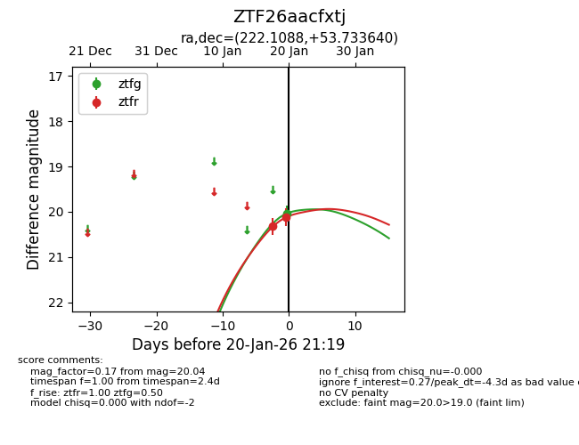
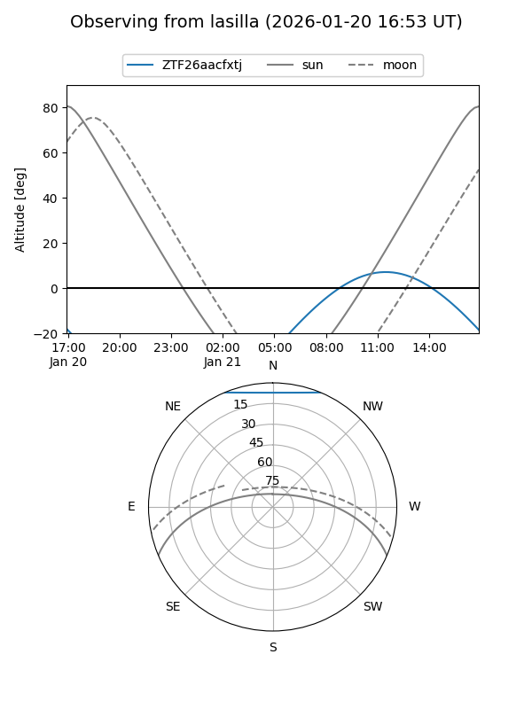
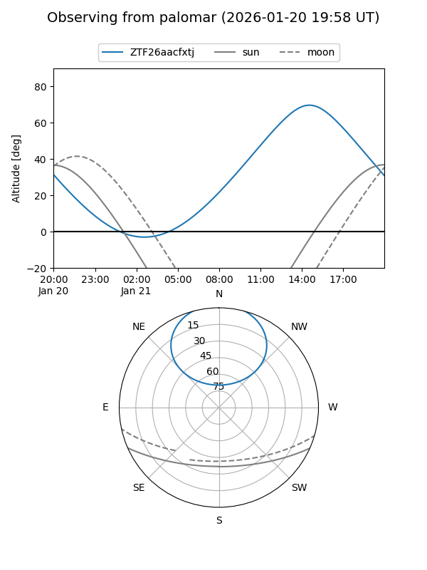
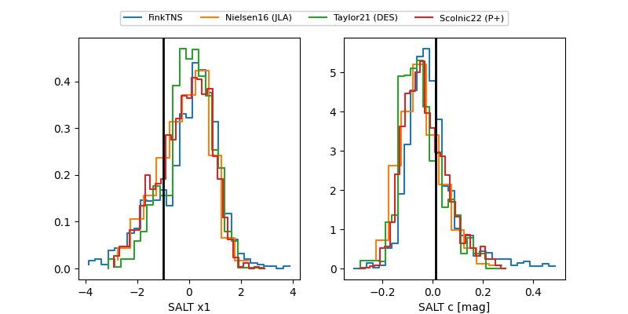

ZTF26aacfxtj
Target ZTF26aacfxtj at 2026-01-18 21:16
Aliases and brokers:
FINK: link
Lasair: link
ALeRCE: link
alt names
ZTF26aacfxtj (ztf,fink_ztf)
Coordinates:
equatorial (ra, dec) = 222.1088,+53.73364
equatorial (HMS+DMS) = 14:48:26.11,+53:44:01.11
galactic (l, b) = (91.9950,+55.79068)
Flags:
Photometry:
last ztfr=20.32
1 ztfr detections
Lightcurve

Visibility


Additional plots
